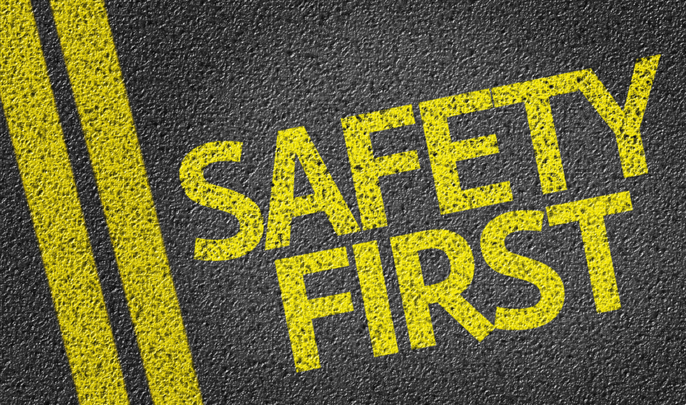

2. Sicurezza Stradale
La sicurezza stradale comprende tutte le pratiche, le tecniche e le precauzioni volte a ridurre i rischi per chi utilizza la strada. Si tratta di un elemento fondamentale dell'educazione stradale e si concentra principalmente su:
- Uso della cintura di sicurezza:
Indossare la cintura di sicurezza è una regola essenziale per la sicurezza in auto, in quanto può fare la differenza in caso di incidente. L'educazione stradale sottolinea l'importanza di utilizzarla sempre, sia per il conducente che per i passeggeri.- Comportamenti da rispettare mentre si guida:
-Evitare l'uso del cellulare alla guida:Distrarsi con il telefono è una delle principali cause di incidenti, per questo è fondamentale mantenere sempre l’attenzione sulla strada.-Non guidare sotto l’effetto di alcol o droghe: Queste sostanze compromettono i riflessi e la capacità di reazione, aumentando notevolmente il rischio di incidenti.
-Rispettare la distanza di sicurezza e i limiti di velocità: Adattare la guida alle condizioni della strada contribuisce a prevenire situazioni pericolose e garantisce maggiore sicurezza per tutti.
